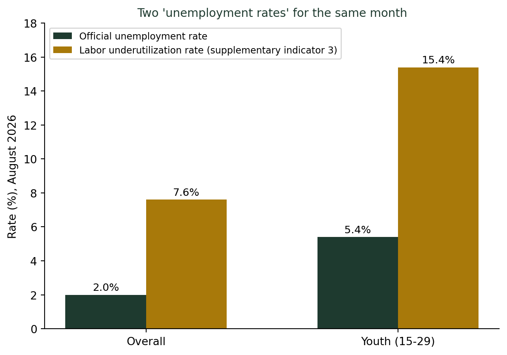
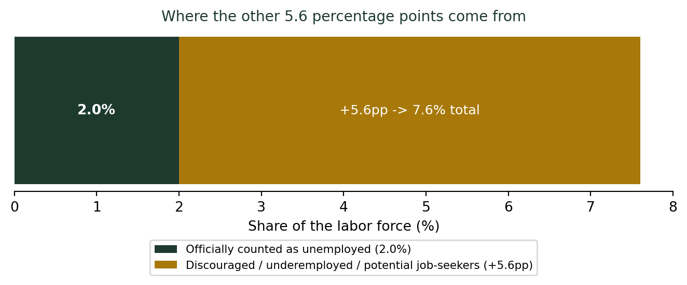

(공식 통계 숫자 읽는 법) 누구를 세고 누구를 빼는가 — 실업률의 숨은 정의
통계기초
기술통계
2026년 8월, 한국의 공식 실업률은 2.0%였다. 그런데 같은 달 국가데이터처가 함께 발표한 ’고용보조지표3’은 7.6%다. 청년층은 5.4%와 15.4%로 격차가 10%포인트나 된다. 같은 나라, 같은 달인데 왜 이렇게 다를까? 답은 ’실업자’라는 단어를 어디까지 세느냐에 있다.
실업률 2.0%, 그런데 체감 실업률은 7.6%
2026년 8월 발표된 한국의 공식 실업률은 2.0%였다. 실업자 수는 58만 8천 명으로 1년 전보다 오히려 4천 명 줄었다. 숫자만 보면 거의 완전고용에 가깝다. 그런데 같은 달, 같은 통계 안에 실업률과 나란히 발표되는 또 다른 숫자가 있다. 고용보조지표3(확장실업률)은 7.6%다. 청년층(15~29세)으로 좁혀 보면 격차가 더 벌어진다 — 공식 청년실업률 5.4%, 고용보조지표3 기준 청년 체감실업률 15.4%. 같은 나라, 같은 달, 같은 연령대인데 두 숫자는 3배 가까이 차이가 난다.
실업자가 되려면 세 가지 조건을 다 채워야 한다
국가데이터처의 경제활동인구조사는 실업자를 이렇게 정의한다 — ① 현재 수입 있는 일을 하지 않고, ② 지난 4주간 적극적으로 구직활동을 했으며, ③ 일자리가 주어지면 2주 안에 즉시 취업할 수 있는 사람. 국제노동기구(ILO) 기준을 그대로 따른 정의다. 문제는 이 세 조건 중 하나라도 빠지면, 아무리 일하고 싶어도 실업자로 잡히지 않는다는 데 있다. 대표적인 사례가 구직단념자다. 지난 1년 안에 구직 경험은 있었지만, 반복된 실패나 눈높이에 맞는 일자리가 없어서 최근 4주간은 구직활동을 쉰 사람들이다. 이들은 실업자가 아니라 주부·학생과 같은 비경제활동인구로 분류되어, 실업률 계산식의 분자에서도 분모에서도 통째로 빠진다.

국가데이터처는 이 사각지대를 메우기 위해 2014년부터 고용보조지표를 함께 발표한다. 그중 가장 넓은 범위를 보는 고용보조지표3은 ① 공식 실업자에 더해 ② 지금 일은 하고 있지만 더 일하고 싶어 하는 단시간 근로자(시간관련 추가취업가능자), ③ 구직단념자처럼 취업 의사와 능력은 있지만 최근 4주 기준을 채우지 못한 잠재구직자까지 모두 포함한다. 2026년 8월, 이 범위를 넓히자 실업률은 2.0%에서 7.6%로 뛰었다.
실업률을 읽는 법
- “실업률 X%”라는 숫자를 보면, 그 옆에 고용보조지표(체감실업률)가 함께 있는지 확인하라. 국가데이터처는 매달 두 숫자를 나란히 발표한다.
- 청년층·고령층처럼 구직을 쉽게 포기하는 집단일수록, 공식 실업률과 체감실업률의 격차가 크다.
- “실업률이 낮다”는 말이 “일자리 사정이 좋다”는 뜻은 아닐 수 있다. 구직을 아예 포기한 사람이 늘어도 공식 실업률은 오히려 낮아질 수 있다.
더 깊이: 지표가 측정하는 것을 오해하는 함정
강의노트 〈기초통계학 3. 통계의 이해 — 확률 해석의 함정〉이 정리한 “통계 해석의 주요 함정” 표에는 정확히 이 문제를 짚는 항목이 있다: “측정 지표 오해 — 지표가 측정하는 것을 잘못 이해. 실업률은 구직 포기자를 제외하므로 과소 추정 가능.” 오늘 살펴본 5.6%포인트의 격차가 바로 이 함정의 실제 크기다. 통계가 잘못된 게 아니라, “실업률”이라는 단어가 우리 직관보다 훨씬 좁은 것을 세고 있다는 사실을 모르는 게 함정이다.
SDV 관점: 좁은 정의를 넓은 정책으로 잇기
실업자를 정의하고 실업률을 계산하는 일은 요약(기술통계, 1단계)이고, 오늘처럼 그 정의의 사각지대를 고용보조지표3과 비교해 드러내는 작업은 추론(2단계)이다. 제가 제안하는 SDV(통계적 데이터 가치화) 관점에서 보면, 이 숫자들의 진짜 쓸모는 그다음부터 시작된다. 청년고용 대책, 구직단념자 지원 예산, 시간제 일자리의 정규직 전환 정책 같은 실제 결정은 2.0%가 아니라 7.6%, 그리고 그 안의 세부 구성을 근거로 설계해야 한다. 좁은 정의의 숫자 하나만 보고 정책을 짜면, 정작 가장 도움이 필요한 사람들이 통계에서부터 빠져 있다는 걸 놓치게 된다. 숫자를 정확히 재는 것과, 그 숫자로 옳은 결정을 설계하는 것은 다른 일이다. (SDV(데이터 가치화))
결론: 실업률 숫자 뒤에 숨은 사람들
나는 학생들에게 “실업률이 낮다”는 뉴스를 볼 때마다 “그럼 구직단념자는 몇 명이었을까?”를 함께 찾아보라고 말한다. 공식 실업률은 거짓말을 하지 않는다. 다만 그 정의 밖에 서 있는 사람들에 대해서는 아무 말도 하지 않을 뿐이다. 공식 통계를 읽는다는 건, 그 통계가 무엇을 세고 무엇을 빼놓았는지부터 확인하는 일이다.